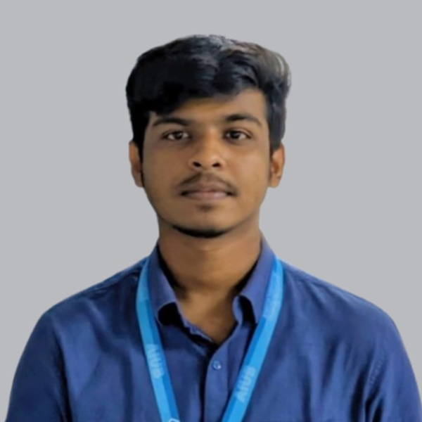

I am a Science and Engineering (CSE) student at American International University-Bangladesh (AIUB) with a strong passion for technology, innovation, and problem-solving. From a young age, I have been fascinated by how computers work and how software can turn ideas into practical solutions that impact everyday life. This curiosity motivated me to pursue CSE, where I continue to build a strong foundation in programming, system design, and analytical thinking. Throughout my academic journey, I have developed proficiency in C++, Java, C#, R, SQL, and Python, strengthening both my theoretical understanding and practical development skills.
Through coursework and university projects, I have gained hands-on experience in software development, database management, and application design, learning how to approach problems logically and efficiently. I enjoy working in collaborative environments where ideas can be shared and refined, while also being comfortable taking initiative and working independently when needed. My long-term goal is to use technology to develop meaningful solutions that address real-world challenges. Outside of academics, I enjoy photography, traveling, and playing video games, which help me stay creative, explore new perspectives, and maintain balance in my life.